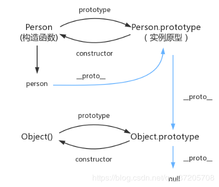
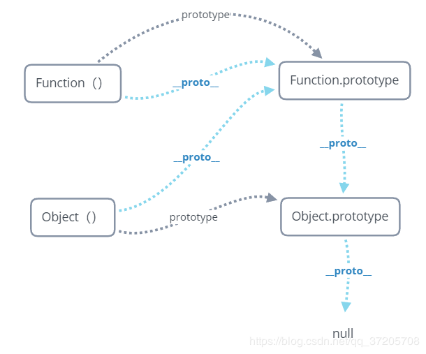

上面这张图出自 冴羽的博客，这张图已经能很好地解释原型与原型链了，其涉及到的属性如下：
prototype: 每个函数都有一个 prototype（原型）属性，这个属性是一个指针，指向一个对象，而这个对象的用途是包含可以由特定类型的所有实例共享的属性和方法，如果使用这个函数生成了实例，那么称这个对象为所有实例的原型。__proto__： 每个对象都拥有__proto__属性，该属性用于实现原型链，当访问一个对象的属性时，如果该对象内部不存在这个属性，就通过原型链找直到找到或者到终点 null。constructor：每个原型都有一个 constructor 属性指向关联的构造函数我们可以用下面这段代码验证一下：
function Person () {
}
let person = new Person()
console.log(person.__proto__ === Person.prototype) // true
console.log(Person.prototype.constructor === Person) // true
console.log(Person.prototype.__proto__ === Object.prototype) // true下面这张图咱自己画的，主要是分析下 Object 与 Function 的原型问题：
所有的对象都是由 Object() 构造函数构造的，所有的函数声明 / 函数表达式都是 Function() 构造函数的实例，而 Object() 构造函数本身又是 Function() 构造函数的实例，其原型关系如下：

需要注意的是 Function() 的__proto__属性直接指向的是其原型对象。
我们可以用下面的代码来验证这张图：在 node 环境及浏览器环境下都是一样的结果
console.log(Object.__proto__ === Function.prototype) // true
console.log(Function.__proto__ === Function.prototype) // true
console.log(Function.prototype.__proto__ === Object.prototype) // true
console.log(Object.prototype.__proto__ === null) // true